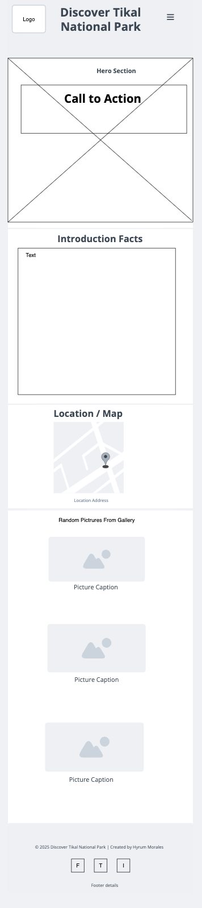
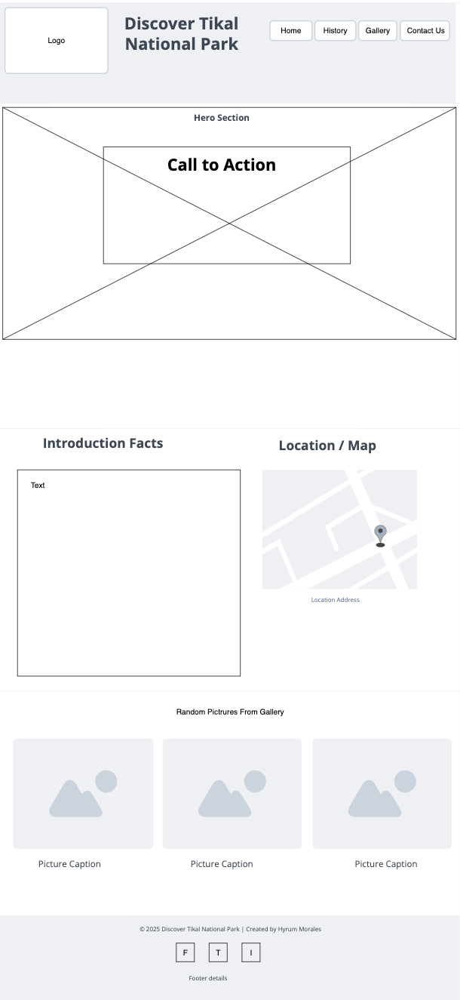

Exploring Tikal National Park - Site Plan
Site Name
Exploring Tikal National Park - This name represents an informative website about Tikal,
covering history, flora, fauna, ruins, and visitor information.
Site Purpose
The website provides information about the cultural, historical, and ecological significance of Tikal
National Park. It offers visitor resources and showcases the park’s beauty through imagery and educational
content.
Scenarios
- What are the main historical sites to visit in Tikal?
- What types of wildlife can be seen in Tikal?
- How can I plan my visit to Tikal (entry fees, guided tours, accommodations)?
Color Schema
- Dark Green: Main color for backgrounds and key sections.
- Red: Accent color for highlights and call-to-actions.
- Black: Used for footer and other accent areas.
- Gray: Contrast color for subtle elements.
- White: Used for text and content backgrounds.
Typography
- Poppins (Light): Used for body text.
- Rock Salt: Used for special highlights (e.g., headers, quotes).
Wireframes
See the wireframe images for mobile and desktop layouts.

